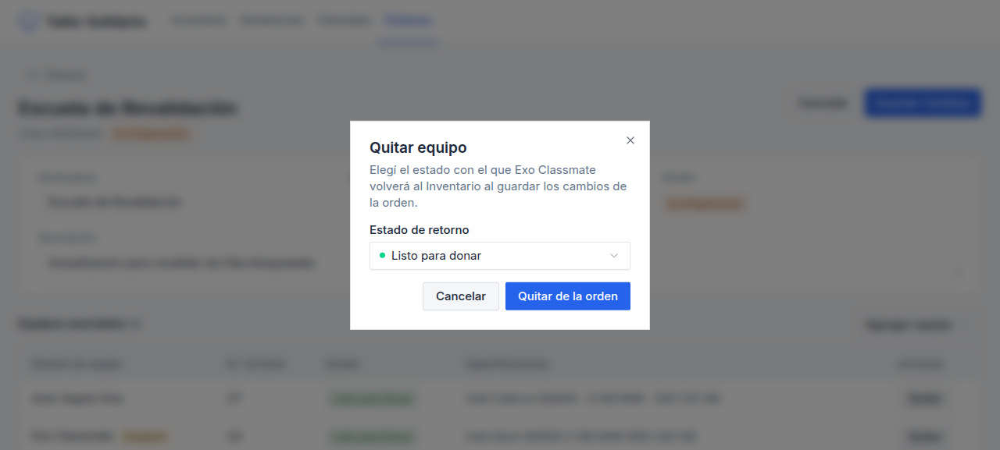

Rama: feature/ordenes · Superficie: navegador (Vite dev server + Supabase enlazado) · Fecha: 2026-11-16
npm run dev (Vite 7.2.4) en http://localhost:5174, levantado por esta corrida. El puerto 5173 ya estaba ocupado por otra instancia.Taller-Solidario-Pruebas (biedfvxlnwmapqiwlgtr), credenciales en .env (VITE_PROJECT_URL_SUPABASE, VITE_SUPABASE_API_KEY).ordenes-7646666018db).Estado inicial de los datos: la tabla orders estaba vacía; los equipos con estado «Listo para Donar» y sin orden eran 18 (de un total de 139 equipos).
supabase/migrations/20261116120000_order_transactions.sql no está aplicada en la base (decisión del usuario), así que las RPC save_order_changes y change_order_status no existen en el esquema desplegado. La llamada directa devuelve PGRST202 Could not find the function public.save_order_changes(...). Las cinco filas que dependen de esas transacciones quedan bloqueadas: V4, V7, V8, V9 y el resultado esperado de V12 se exertuta con esa falla real.
| # | Registro | Antes | Durante | Reversión |
|---|---|---|---|---|
| 1 | Orden 89a201dd-bd0d-4c6f-a22f-a76dfe82f385 (creada por la UI en V2) | no existía | recipient «Escuela de Prueba Validación», deliveryDate 2026-12-01, status «En Preparación» | Eliminada por la UI en V11. La tabla orders quedó vacía. |
| 2 | Estado de esa misma orden | «En Preparación» | «Donado» (PATCH por REST, para alcanzar la ruta de V10 y V9) | Revertido a «En Preparación»; la orden terminó eliminada en V11. |
| 3 | Orden 5f5e6f73-2196-4aa7-b532-f98576a4f946 «Colegio Alfa» | no existía | deliveryDate 2026-01-15, «En Preparación» (sembrada por REST para los filtros de V13) | Eliminada por REST al final de la corrida. |
| 4 | Orden 94f1f896-a1e0-4a7d-afd1-d1a0b88e3016 «Instituto Beta» | no existía | deliveryDate 2026-06-20, «En Preparación» (sembrada por REST para los filtros de V13) | Eliminada por REST al final de la corrida. |
| 5 | Equipo dad86b41-9cef-4abb-9f27-ed2f2d5c8673 (N.° de serie 27, «Acer Aspire One») | order_id null, status «Listo para Donar» | order_id = 5f5e6f73… (asociado a «Colegio Alfa», para V15 y V7) | order_id vuelve a null; status nunca cambió. Verificado por REST al final. |
No se modificó ningún otro registro. La tabla orders quedó vacía y el equipo 27 volvió a su estado original.
Se abrió «Crear orden» y se envió el formulario vacío. La consola de la app no registró ninguna llamada de escritura; el formulario mostró «El destinatario es requerido» y «La fecha de entrega es requerida». No se creó ninguna orden (la tabla orders siguió vacía).
Con destinatario «Escuela de Prueba Validación», fecha 2026-12-01 y descripción, el alta creó la orden en «En Preparación», sin equipos, mostró el aviso «Orden creada correctamente» y navegó al detalle de la orden nueva (/#/ordenes/89a201dd-bd0d-4c6f-a22f-a76dfe82f385).

La lista de equipos del detalle muestra «Aún no hay equipos asociados, edite la orden para vincularlos» y el encabezado «Equipos asociados (0)».
Lo que sí quedó comprobado: el borrador se arma en el formulario (el equipo agregado aparece en la tabla con la etiqueta «Pendiente» y «Guardar Cambios» se habilita), y al guardar se dispara updateOrder → RPC save_order_changes. La llamada falla con PGRST202 porque la función no está desplegada, así que el resultado esperado — que campos, asociación y desvinculación se apliquen juntos en una sola operación — no se puede observar. El orden guardado y el equipo no cambian.

Qué haría falta para desbloquearla: aplicar la migración en la base. Sin ella no hay operación transaccional que validar.
Con el destinatario vacío, «Guardar Cambios» no llama a la base: aparece el aviso «Completá el destinatario y la fecha de entrega» y el campo sigue vacío. La orden guardada conserva su destinatario.

El selector «Agregar equipo» ofrece 18 equipos, todos con estado «Listo para Donar» y sin orden (coincide con la consulta getAvailableNotebooks: status = 'Listo para Donar' y order_id is null). Al elegir uno, la fila se suma a la tabla del detalle marcada «Pendiente».

Lo que sí quedó comprobado: el modal «Quitar equipo» ofrece el Select «Estado de retorno» con los seis estados de equipo de la aplicación (Listo para donar, Recibido, Instalar SO, En reparación, Bloqueada, Donado); al confirmar, la fila queda marcada «Se quitará» y el borrador queda pendiente. El guardado, que es donde el equipo vuelve al Inventario con el estado elegido, depende de la RPC y no se puede observar: la llamada falla con PGRST202 y el equipo sigue asociado a la orden, con su estado intacto.


El botón existe en consulta sobre una orden «En Preparación». Al pulsarlo, la RPC change_order_status falla con PGRST202, la app avisa «Ocurrió un error al cambiar el estado de la orden» y la orden sigue «En Preparación». La transición de la orden y la de sus equipos en una sola operación no se puede observar sin la función desplegada.

Lo que sí quedó comprobado: sobre una orden «Donado» el único botón es «Volver a En Preparación»; el aviso modal aparece con el texto «Los equipos asociados volverán al estado Listo para donar y la orden podrá editarse otra vez» y los botones «Cancelar» y «Cambiar»; cerrar el aviso no cambia nada (la orden sigue «Donado» en la base). Confirmar dispara la RPC, que falla con PGRST202: el regreso no se puede observar.


Con la orden en «Donado», el detalle muestra únicamente «Volver a En Preparación»: no aparecen «Editar», «Marcar como Donado», «Eliminar orden», el selector de equipos ni el botón «Quitar» en la tabla de equipos.

Sobre una orden «En Preparación» y sin equipos aparece «Eliminar orden»; el aviso «Esta orden no tiene equipos asociados. ¿Querés eliminarla?» pide confirmación y, al confirmar, la orden se elimina, se avisa «Orden eliminada correctamente!» y se vuelve a la lista. Por REST la orden ya no existe. En cambio, una orden con equipos asociados no muestra ese botón, y una orden «Donado» tampoco.


Con la descripción modificada y un equipo agregado en el borrador, «Guardar Cambios» falla: la app avisa «Ocurrió un error al actualizar la orden», sigue en modo edición, el campo de descripción conserva el texto nuevo y la fila del equipo sigue marcada «Pendiente». Por REST, la orden conserva su destinatario, su descripción original y su estado. La falla real del sistema es la ausencia de la RPC en la base, que es el mecanismo que la fila debe soportar: nada se escribe, se notifica y el formulario conserva lo que la persona escribió.

Con dos órdenes sembradas («Colegio Alfa» 15/01/2026 e «Instituto Beta» 20/06/2026): la búsqueda por destinatario «Alfa» deja solo «Colegio Alfa»; el rango 01/01/2026–31/01/2026 deja solo «Colegio Alfa»; el rango con ambos extremos en la fecha exacta (15/01/2026–15/01/2026) incluye el registro, o sea que el rango es inclusivo. En la tabla el orden es por fecha de entrega descendente y la fecha se muestra como dd/MM/yyyy.
En Inventario, desde la tercera página la búsqueda «Latitude 3190» devolvió los 15 equipos que coinciden en toda la base («14 de 119 equipos» antes, «14 de 15 equipos» después) y no una tabla vacía: la búsqueda alcanza todos los registros y el cambio de búsqueda devuelve a la primera página.


Sin órdenes y sin filtros, la tabla muestra «No hay órdenes disponibles». Con filtros que no coinciden (rango 01/01/2027–31/01/2027), muestra «No se encontraron resultados».


El equipo 27 asociado a «Colegio Alfa» muestra, al final del formulario, el bloque «Orden de donación» con el destinatario enlazado al detalle de la orden (#/ordenes/5f5e6f73-2196-4aa7-b532-f98576a4f946) y «Fecha de entrega: 15/01/2026»; el Select de estado del equipo aparece deshabilitado. El enlace abre el detalle de la orden.


La entrada «Órdenes» del menú lleva a /#/ordenes y la fila de la tabla a /#/ordenes/:id. El enlace del menú queda activo (aria-current="page" y clase active) tanto en la lista como en el detalle. El botón «← Órdenes» del detalle vuelve a la lista.
No se encontraron errores ajenos a las filas. Se registran dos observaciones que no son fallos de la fila ni del cambio:
| Fila | Resultado | Motivo |
|---|---|---|
| V1 | PASS | |
| V2 | PASS | |
| V3 | PASS | |
| V4 | BLOQUEADA | Requiere la RPC save_order_changes, no desplegada. |
| V5 | PASS | |
| V6 | PASS | |
| V7 | BLOQUEADA | Requiere la RPC save_order_changes, no desplegada. |
| V8 | BLOQUEADA | Requiere la RPC change_order_status, no desplegada. |
| V9 | BLOQUEADA | El aviso y la cancelación sí se comprobaron; el cambio requiere la RPC change_order_status. |
| V10 | PASS | |
| V11 | PASS | |
| V12 | PASS | Verificado con la falla real del sistema (RPC ausente). |
| V13 | PASS | |
| V14 | PASS | |
| V15 | PASS | |
| V16 | PASS |
12 filas pasaron, 4 quedaron bloqueadas y ninguna falló. Las cuatro bloqueadas dependen de la misma causa: la migración de las dos RPC no está aplicada en la base.